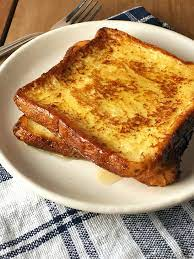

French Toast

Description
A very simple and delicious, decadent recipe
Goes great as a sweet morning breakfast on a sunday morning
Ingredients
Sliced Bread (preferably white)
Eggs
Milk
Maple Syrup
Oil or Butter
Steps
- Whisk together 1:1 ratio of eggs and milk into a bowl
- Lightly soak bread into egg and milk mixture
- Place the soaked bread into a buttered/oiled pan on a medium heat and cook for appx. 3 mins before flipping and cooking until brown on either side
- Plate the bread and serve with butter and/or maple syrup as desired